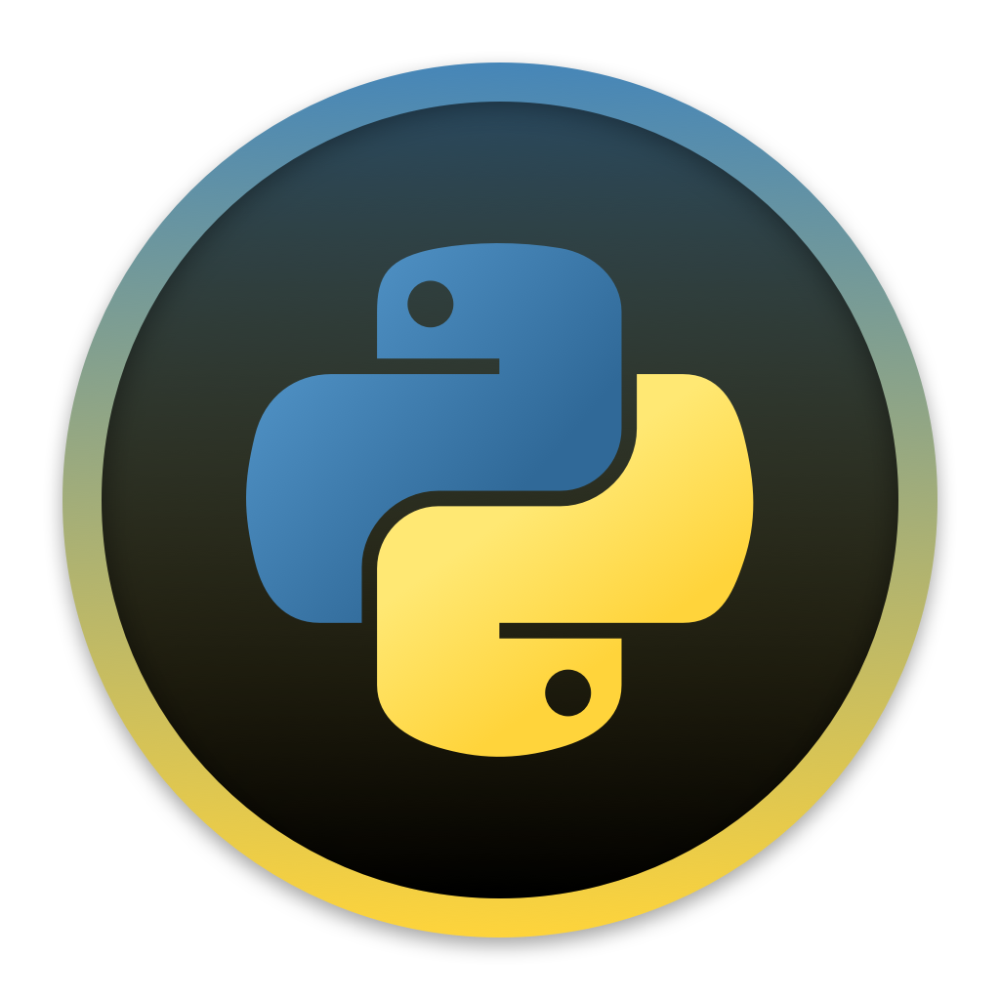
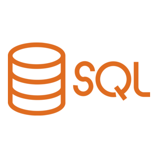
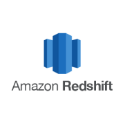
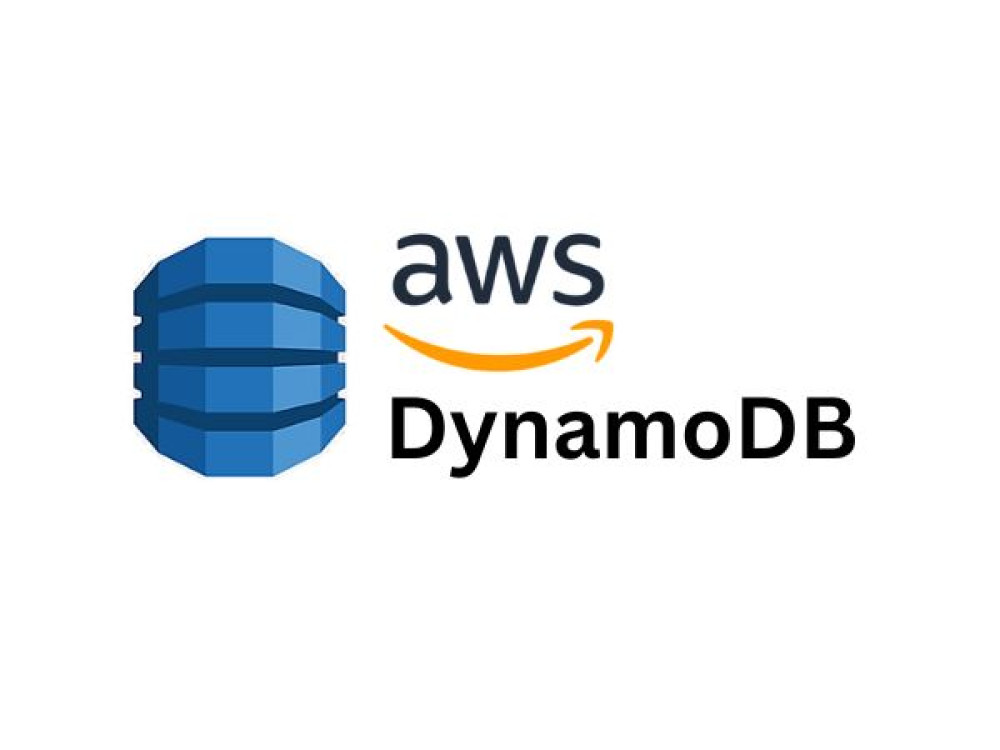
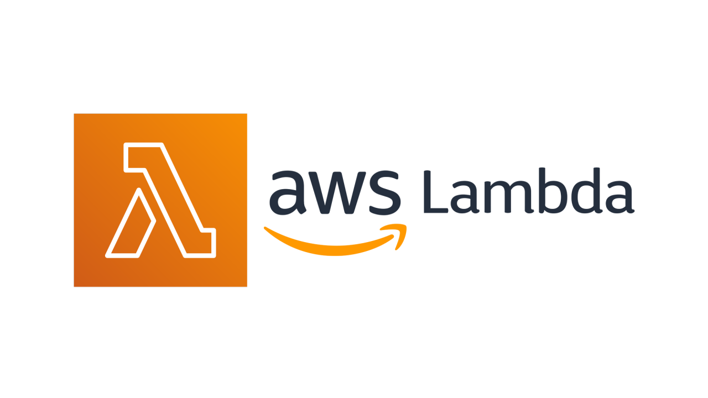

// About
I'm a Sr. Business Analyst at Amazon Prime Video, Bengaluru, with 6 years of professional experience - 4.6 at Amazon in Trust & Safety, and 1.4 at MRF Ltd as an Operational Assistant.
My work sits where data engineering, product thinking and business intelligence overlap. I don't just analyse problems - I build the tools that fix them permanently. The clearest example is Sentinel, an end-to-end audit platform I designed solo that replaced a fragmented chaos of Excel sheets, Quip docs and SharePoints across 10+ workflows. Today 250+ colleagues use it daily without thinking about it - which is exactly the point.
More recently I've built a GenAI chatbot on AWS Bedrock that lets non-technical teams query T&S datasets in plain English, a model accuracy measurement framework now used by Ops, Science and Tech teams, and Spark/Redshift ETL pipelines for dynamic risk detection. I'm actively looking for BIE roles where I can automate the painful, measure the important, and put the right data in front of the right people at the right time.
// What I've Built
Built: Smart queue with live title reallocation · blind review + audit with auto comparison engine · auto SIM/issue creation · direct Redshift sync (no Apollo) · Slack + email SLA alerts · priority queue mechanics · dynamic admin-configurable forms per workflow - no code changes needed · AHT & SLA calculations in manager view · 10+ workflows onboarded.
// Experience
Present
- Built Sentinel - audit orchestration platform used by 250+ employees across 10+ workflows, saving 18 analyst-hours/day
- Built GenAI chatbot on AWS Bedrock for T&S data queries via Athena with Airflow-driven ingestion pipelines
- Designed model accuracy measurement framework adopted by Ops, Science and Tech teams
- Built Spark + Redshift ETL pipelines for dynamic risk detection - 30% improvement in critical defect catch rate
- Delivered QuickSight dashboards and Lambda-generated HTML reports for leadership decision support
- Resolved 100+ ad-hoc stakeholder analytics requests; became trusted data partner across teams
May 2022
- Content analysis and classification with 98% productivity and 100% quality
- Managed sensitive data under strict governance protocols with a team of 40+
Mar 2022
- Produced daily MIS reports for senior leadership from operational, inventory and sales datasets
- Managed SAP-based operations - vendor liabilities, inventory reconciliation, stock transfer analysis
- Prepared statutory TDS/TCS returns ensuring audit readiness and regulatory compliance
// What I'm Good At
// Tech Stack

Python
SQL
Redshift
DynamoDB
Lambda